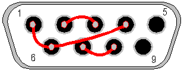

Serial Port Loopback Plug |
Top Previous Next |
|
The serial port on IBM compatible PCs conform to the RS232 electrical standard and use a male DB-9 connector. (older PCs may use a DB-25 in which case a converter will be required). The DB-9 connector as the following 9 pins.
To make the loop back plug the following pins need to be connected together: ▪Receive and transmit (2 & 3) ▪Request to send and Clear to send (7 & 8) ▪Data carrier detect, Data set ready and Data terminal ready (1, 6 & 4)
This diagram shows the connections that need to be made. It's the rear view of the female DB-9 connector that's required for the plug. The red lines and gray dots show the connections that need to be made on the back of the plug.
 Female DB-9 connector - Rear view
|